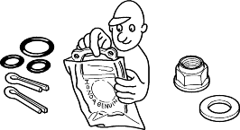
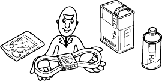
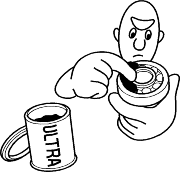
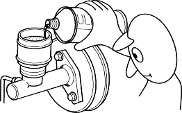
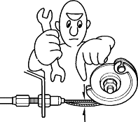

- Use new packings, gaskets, O-rings and cotter pins whenever reassembling.
- Do not reuse parts that must be required to replace. Always replace them.

- Use genuine HONDA parts and lubricants or their equivalent. When parts are to be reused, they must be inspected carefully to make sure they are not damaged or deteriorated and are in good usable condition.

- Coat or fill parts with specified grease as specified (see page 3-2). Clean all removed parts with solvent upon disassembly.

- Brake fluid and hydraulic components
- When replenishing the system, use extreme care to prevent dust and dirt from entering the system.
- Do not mix different brands of fluid, as they may not be compatible.
- Do not reuse drained brake fluid.
- Because brake fluid can cause damage to painted and resin surfaces, care should be taken not to spill it on such materials. If spilled accidentally, quickly rinse it with water or warm water from painted or resin surfaces.
- After disconnecting brake hoses or pipes, be sure to plug the openings to prevent loss of brake fluid.
- Clean all disassembled parts only in clean BRAKE FLUID. Blow open all holes and passages with compressed air.
- Keep disassembled parts from air-borne dust and abrasives.
- Check that parts are clean before assembly.

- Avoid oil or grease getting on rubber parts and tubes, unless specified.
- Upon assembling, check every part for proper installation and operation.
